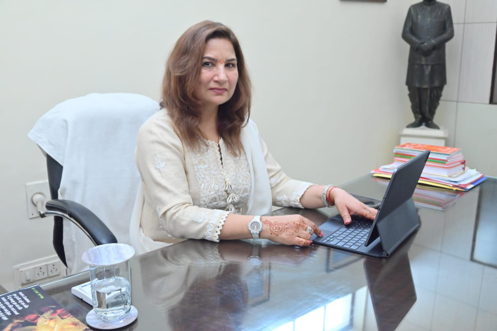

Leaders are not born, they are produced.

Education is the most powerful weapon which you can use to change the world . Indus Public School, over the years has been relentlessly attempting to deliver it’s best in the field of education. Here education is not restricted to mere textbooks, but is a complete package aimed at holistic learning resulting in complete evolution of the body mind and soul. Real education provides the confidence and courage to face the challenges in life. Its about teaching the child How to think rather than What to think. Equipping the child with adequate life skills, knowledge and wisdom to sustain himself or herself in the tough world. Childhood is a state of mind which ends the moment a puddle is first viewed as an obstacle instead of an opportunity. The most significant phase of human life, childhood, is known for its naivety, innocence and simplicity. Neuroscience states that neurons are highly active between 0 to 8 years of age, thus resulting in formation of habits, acquiring moral values and etiquette and developing concepts for a lifetime. Therefore real education needs to be imparted in these years so that the roots are strong enough to bring up an intellectual youth having good habits, values and etiquette. We at Indus have been pursuing our modest endeavors to contribute in producing a new generation of adults physically strong, mentally balanced and emotionally stable.

We at Indus Public School are committed to the cause of students education – creating practical avenues for them to pursue their creative interests that can later serve as their means of livelihood, helping them to attain financial independence, an important goal because from there comes the freedom of personal choice.
We endeavour to equip all our students with the insight to objectively evaluate their strength and weaknesses, and be convinced about the choices they make in every aspect of their life. The knowledge imparted to them by a qualified staff and an able managing committee will enable them to be free in their creative expressions and lend them conviction and the experience to face new challenges.
There is still a long way to go before the total realization of our ultimate goal but with constant cooperation and social support, we would reach the pinnacle of success in no time.
© All rights reserved. Last updated in 2024.